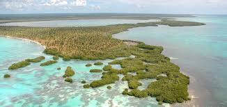

El Parque Nacional del Este, tambien conocido como Parque Nacional Cotubanama, es una de las conservas naturales mas imortantes de la Republica Dominicana Este parque ofrece una rica biodiversidad y paisajes impresionantes.
Imagenes del Parque
A continuacin, se muestra una imagen del parque nacional del Este

Actividades
En el parque, puedes realizar diversas Actividades como:
Senderismo
Buceo
Observacion de aves
Paseos en bote
Enlaces de Interes
Para mas informacion, puedes visitar los siguientes Enlaces